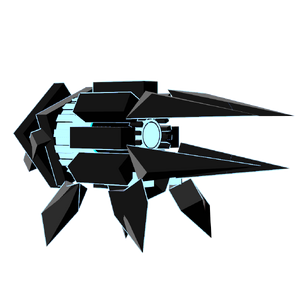

NaN
背景

Nanite Autonomous Non-Conglomerate 是一种自给自足的防御系统，由能彼此协同的纳米机器集合而成。它们可以按任意构型组合，并主动适应自身的战斗能力。
策略
NaN 是一台可以切换为 4 种不同模式的机器，每种模式都有各自的难度和弱点。
切换到火焰时，NaN 会变得易受火焰伤害，并周期性向目标射击投射物，有概率点燃目标。
切换到冰霜时，NaN 会变得易受冰霜伤害，并向目标发射成组投射物，有概率冻结目标。
切换到电击时，NaN 会变得易受电击伤害，并向天空发射闪电，随后闪电会在小范围 AoE 中落下，有概率麻痹目标。
切换到暗影和光耀时，NaN 可以发射一圈施加 BREACHED 的暗影投射物，或一排施加 WEAKENED 的光耀投射物。值得注意的是，在这个形态下它不会弱于暗影或光耀，因为它同时采用了这两种对立元素。
统计
基础 HP：5300
伤害：火焰、冰霜、电击、光耀和暗影
| 属性 | 抗性 |
|---|---|
| 物理 | 中性 (1x) |
| 火焰 | 中性 (1x) |
| 冰霜 | 中性 (1x) |
| 电击 | 中性 (1x) |
| 光耀 | 中性 (1x) |
| 暗影 | 中性 (1x) |
| 毒 | 中性 (1x) |